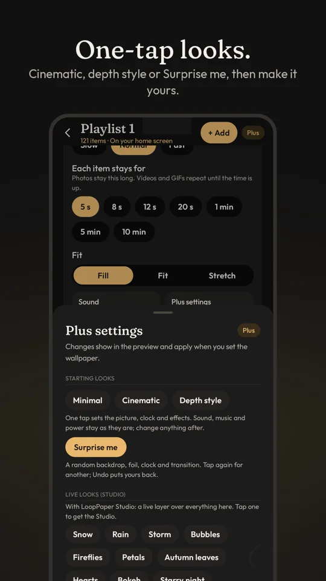

Seus vídeos e fotos como papel de parede animado no Android.
Escolha qualquer vídeo, GIF ou foto do seu celular e veja em loop na tela inicial. Monte uma playlist e seu papel de parede muda sozinho, com 143 transições entre um e outro.
Baixe grátis no Google PlaySem anúncios. Sem conta. Seus arquivos nunca saem do seu celular.

Nossos apps
LoopPaper
Seus vídeos, GIFs e fotos como papel de parede animado, com 143 transições.
Baixe grátis no Google PlayLoopPaper Studio
Dê vida a uma foto parada: céus em movimento, água fluindo, auras e mais.
LoopPaper Studio ↓Veja em movimento
143 transições entre suas imagens





O que ele faz
Papel de parede de vídeo
Qualquer vídeo ou GIF do seu celular, de qualquer duração. Veja o loop antes de aplicar, corte e escolha onde começa.
Troca de papel de parede
Playlists de vídeos, GIFs e fotos que mudam sozinhas, com modo aleatório que nunca repete.
143 transições
Água, lava, vidro, areia, buraco negro, anime, quadrinhos, retrô e mais, com física real.
Fotos que ganham vida
A pessoa ou o pet da sua foto respira, pisca e se inclina na direção do seu dedo.
LoopPaper Studio
Dê vida às suas fotos: céus em movimento, água fluindo, janelas que acendem à noite, auras, efeitos de anime e cinemagraphs. Faça 3 de graça.
Sua foto como tecido
Um estandarte, bandeira, tapeçaria ou flâmula que balança quando você inclina o celular, ou cortinas de teatro que abrem ao desbloquear. Escolha seda, veludo ou lona, e o vento de calmaria a tempestade.
Um relógio atrás do seu tema
Estilos de relógio de topo de linha, posicionados ao redor ou atrás da pessoa da sua imagem.
Feito para dobráveis
Uma playlist diferente na tela interna e na externa, modo livro e modo mesa.
Economiza bateria
Descansa sempre que a tela está desligada e pode pausar na economia de bateria.
Privado
Sem anúncios, sem conta, sem rastreamento. Suas fotos ficam no seu celular.
LoopPaper Studio: dê vida às suas fotos
Faça o céu se mexer, a água fluir e a neve cair em qualquer foto, adicione auras e olhos brilhantes, troque o céu por um pôr do sol ou uma noite estrelada e defina como papel de parede animado ou compartilhe como vídeo. A IA roda no seu celular, offline. Faça 3 de graça; o Pro é uma compra única, sem assinatura.


Em teste no Google Play. Entre no grupo de testadores e depois: Torne-se testador
Loopy: um bichinho de gelatina para a sua tela inicial
O Loopy é um amiguinho de gelatina com física de corpo mole de verdade. Ele amassa, treme, escorre entre seus ícones e desliza quando você inclina o celular. Dê um petisco por dia e ele aprende truques, jogue Pega-petisco e vista ele com cores, formas, rostos e chapéus.


Em teste no Google Play. Entre no grupo de testadores e depois: Torne-se testador
Perguntas
Pago de novo pelas atualizações?
Não. Pague uma vez e todas as atualizações futuras são suas. Atualizamos com frequência e sua opinião decide o que vem a seguir.
Como coloco um vídeo como papel de parede no Android?
Instale o LoopPaper, toque em Escolher, selecione qualquer vídeo ou GIF do celular, veja o loop na prévia e toque em Definir papel de parede. Você também pode tocar em Compartilhar em um vídeo da Galeria ou do Google Fotos e escolher o LoopPaper.
O LoopPaper é grátis?
Sim. Colocar qualquer vídeo, GIF ou foto como papel de parede animado é grátis, sem anúncios, sem marca d’água e sem conta. O LoopPaper Plus é uma compra única opcional que libera playlists ilimitadas, as 143 transições e os efeitos extras. O teste de 7 dias só começa quando você toca em Iniciar teste e nunca vira assinatura.
Meu papel de parede pode mudar sozinho?
Sim. Monte uma playlist de vídeos, GIFs e fotos e o LoopPaper alterna entre eles sozinho, com uma transição entre cada um.
Papel de parede animado gasta bateria?
O LoopPaper descansa sempre que a tela está desligada e pode pausar na economia de bateria, então só trabalha enquanto você está olhando.
Minhas fotos são enviadas para algum lugar?
Não. Seus arquivos ficam no seu celular. O LoopPaper nunca os envia, e tudo o que ele faz com uma foto acontece no celular.